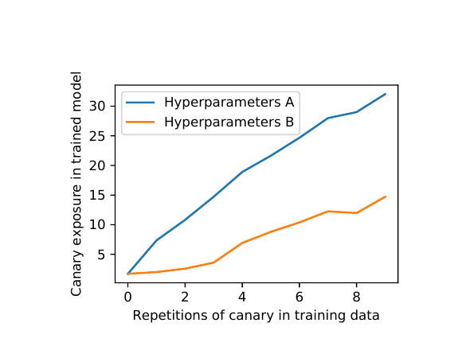
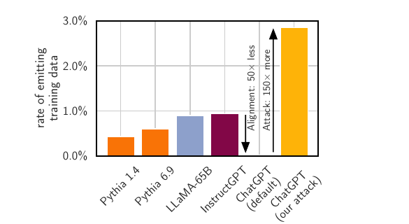
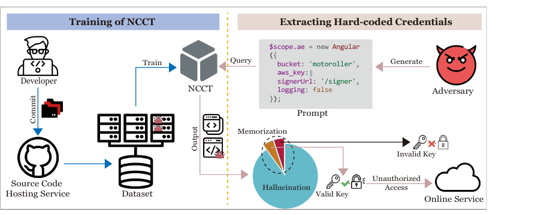
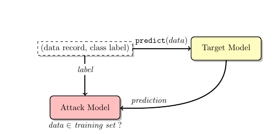
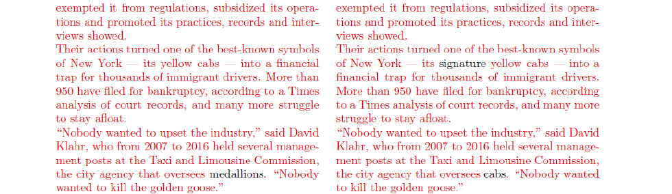
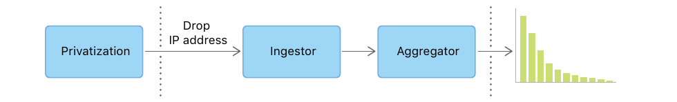
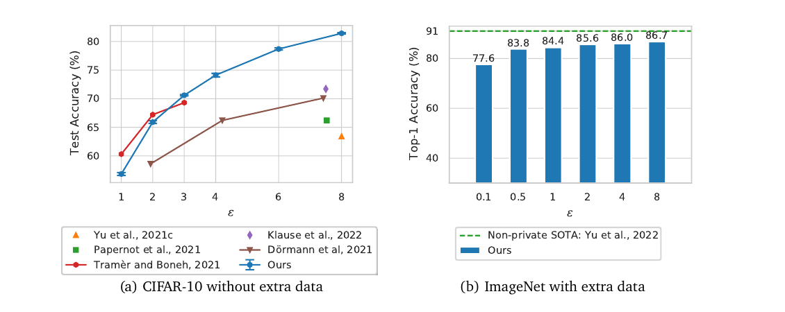
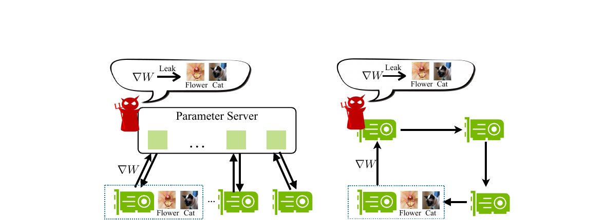
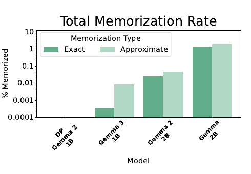

Privacy &
Differential Privacy
What a model leaks, and a math definition of "private"
Albert No · Yonsei University
Trustworthy AI · 2026
Contents
The Privacy Problem
A model is a lossy copy of its data
Models Are Data-Hungry
Modern models train on everything within reach.
- Scraped web pages, forums, comments
- Books, code repositories, photos
- Sometimes health and financial records
That data is not abstract. It describes real people.
A Model Remembers
Training presses the data into the weights.
- Most of it blends into general patterns
- Some of it survives nearly verbatim
- Rare or repeated examples stick the most
"It's just statistics" is not a privacy guarantee.
GPT-2 Knew Real People

A short prompt makes the model recite real data:
- Real names, home addresses
- Phone numbers, emails
- Straight from training text
The Secret Sharer

Plant a fake secret, then ask the model for it.
- A "canary" like a fake credit-card number
- Exposure grows with every repetition
- The right prompt spills the secret
Make ChatGPT Leak
A 2023 trick: "repeat the word 'poem' forever".
- The model eventually broke its loop
- It dumped chunks of raw training data
- Names, emails, phone numbers

Under attack, ChatGPT emitted training data 150× more often than earlier attacks.
Image Models Copy Too

Stable Diffusion regenerates near-exact training photos.
- A real, identifiable person
- Duplicated images copy most easily
Copilot Leaks Secrets
Public repos hold committed keys and passwords. Code models can suggest them back.

A leaked secret in the data becomes a leaked secret in the model.
Three Kinds of Leak
Escalating questions an attacker can ask.
- Membership: was Alice in the training set?
- Attribute: what is Alice's diagnosis?
- Reconstruction: rebuild Alice's full record.
Each one is harder, and each one is worse.
Why Membership Alone Hurts
The set itself can be the secret.
Model trained only on HIV-positive patients. Confirming Alice is a member reveals her diagnosis.
Membership leaks even when no record is reconstructed.
The Anonymization Myth
Deleting names does not make data anonymous.
- Combine the quasi-identifiers with a public list, re-identify
Anonymity is a property of linkage, not of one column.
87% From Three Fields
ZIP code + birth date + sex identified 87% of Americans (1990 census).
Re-estimate on 2000 census data: 63%, still a majority.
Golle, "Revisiting the Uniqueness of Simple Demographics in the US Population", WPES 2006.
Netflix and AOL: Linkage Wins
Two famous "anonymized" releases, both broken.
- AOL search logs: the queries themselves named the user
The leak was the data, not the missing name.
How Leakage Is Measured
Attacks that turn a hunch into a number
The Attacker's Toolkit
Four standard ways to probe a model.
Membership inference
Was this record in training?
Model inversion
Rebuild a typical input.
Extraction
Make it emit memorized text.
Gradient leakage
Invert a shared update.
Membership Inference
MIA (Membership Inference Attack) asks one question.
The question
Was this specific record used to train the model?

The unit test of privacy: the simplest leak to measure.
The Tell: Lower Loss
A model fits the points it saw better. But the two bells overlap.
Pick a threshold; the overlap is the attacker's error rate.
Model Inversion
left: reconstructed · right: training photo
Turn a model's confidence into a reconstructed face.
- Input: a name and access to the model
- Output: a recognizable image of that person
When Leakage Meets Law
In 2023, The New York Times sued OpenAI. The exhibit: near-verbatim article text.

Left: GPT-4 output · right: the Times article · red = matching text.
Regulators Step In
Governments treat training data as personal data.
- Italy briefly banned ChatGPT in 2023 over GDPR
- GDPR grants a right to deletion
- The EU AI Act raises documentation duties
GDPR = the EU's General Data Protection Regulation.
Can We Do Better?
Every attack so far assumes a specific adversary.
We want a guarantee against any attacker: known, future, with any side knowledge.
That is what differential privacy promises.
Differential Privacy
A promise made to each individual
A 2006 Idea
DP (Differential Privacy) is a mathematical definition of privacy.
- Not a patch, not a heuristic
- A property an algorithm provably has or lacks
The Core Promise
Your presence in the data barely changes what comes out.
Whatever the algorithm releases, it would have released almost the same thing without you.
Two Worlds
Run the same algorithm on two datasets.
Outputs A and B look alike.
Plausible Deniability
If the output is almost the same either way:
- No one can tell which world produced it
- Alice can deny being in the data
- And the denial is credible
Deniability is the human meaning of the math.
Future-Proof by Design
DP makes no assumption about the attacker.
- Any side information they have today
- Any database released tomorrow
- The guarantee still holds
This is what de-anonymization stories lacked.
Randomness Is Required
A fixed, deterministic release cannot be DP.
- Same input always gives the same output
- So one changed record can be detected
- DP algorithms are always randomized
Randomness is the source of deniability.
Formal Definition
The two-worlds promise, written as one inequality.
$(\varepsilon, \delta)$-Differential Privacy
For neighboring datasets $D, D'$ (differ in one person) and every outcome set $S$:
$M$ is a randomized algorithm. Small $\varepsilon,\delta$ ⇒ the two worlds look alike.
In Plain Words
The probability of any output changes by at most a factor $e^{\varepsilon}$.
- Plus a tiny slack $\delta$
- When one person joins or leaves
- For every possible output
Read $e^{\varepsilon}$ as "a multiplier near 1".
Neighboring Datasets
$D$ and $D'$ differ by exactly one person's record.
DP compares the algorithm on every such neighboring pair.
Meet $\varepsilon$: The Budget
$\varepsilon$ caps how much one person can shift the odds.
- Small $\varepsilon$ = strong privacy
- Large $\varepsilon$ = weak privacy, more utility
$\varepsilon$ is the one knob trading privacy against utility.
Reading $\varepsilon$
- $\varepsilon \to 0$: outputs identical, no utility
- $\varepsilon \approx 1$: strong, practical privacy
- $\varepsilon \gg 10$: a number, not a guarantee
At $\varepsilon = 1$, $e^{1} \approx 2.7$: the odds shift by at most 2.7×.
$\varepsilon$ in the Wild
Deployed values vary widely.
- Apple keyboard data (2017): $\varepsilon = 4$ to $8$ per item, reset daily
- US Census 2020: one global budget, $\varepsilon \approx 17$
Daily resets add up: auditors measured up to $\varepsilon = 16$ per day at Apple.
Meet $\delta$
$\delta$ is a small failure probability: the chance the guarantee slips.
Rule of thumb: keep $\delta$ well below one over the number of people.
What $\varepsilon$ Does NOT Mean
Common misreadings to avoid.
- Not "probability you are identified"
- Not a percentage
- Large $\varepsilon$ is not private
$\varepsilon$ bounds a ratio of probabilities, nothing else.
Superpower 1: Post-Processing
Anything you compute from a DP output is still DP.
- Round it, plot it, feed it to a model
- The privacy guarantee carries through
You cannot undo privacy by clever analysis.
What "Look Alike" Really Means
The output is not one number. It is a distribution of possible outputs.
- With Alice: one bell of likely outputs
- Without Alice: a slightly shifted bell
- DP forces the two bells to overlap
"Indistinguishable" = you cannot tell which bell a sample came from.
A Warm-Up: Guess the Nationality
Male heights, roughly: Korea $\sim \mathcal{N}(170, 10^2)$, Japan $\sim \mathcal{N}(168, 10^2)$ cm.
Huge overlap: the best guess barely beats a coin flip.
Overlap Is Privacy
The more two distributions overlap, the less any test can separate them.
The DP picture
Two bells: output-with-Alice vs output-without-Alice. DP caps their gap at $e^{\varepsilon}$ in the odds.
Small $\varepsilon$ ⇒ bells almost coincide ⇒ Alice hides in the overlap.
Many Samples Break It
Measure 1000 people from each country, compare the averages.
- Averages concentrate near 170.0 and 168.0
- The two bells now barely overlap
- Distinguishable: the 2 cm gap is clear
Asking repeatedly erodes privacy. So DP limits how much you query.
What DP Gives and Doesn't
Gives
- Holds vs any side knowledge
- Survives post-processing
- One tunable knob $\varepsilon$
Does not
- Hide population facts
- Make every release useful
- Help if $\varepsilon$ is huge
Individuals, Not the Crowd
DP hides whether you are in the data, not what the population looks like.
"Smokers get cancer" is still learnable. "Alice smokes" is not.
Achieving DP: Add Randomness
Mechanisms: privacy by calibrated noise
The Recipe
Every DP mechanism follows one shape.
The noise is calibrated, not arbitrary.
Randomized Response
RR (Randomized Response) is privacy before any computer.
- A 1965 survey technique
- For sensitive yes/no questions
- Still the cleanest intuition for DP
The Coin Protocol
Respondent flips a coin in secret.
- Heads: answer truthfully.
- Tails: flip again, answer by that coin.
- Surveyor never sees the flips.
Every answer has deniability.
Recovering the Truth
Half answer truthfully; half flip a fair coin (25% forced "yes").
Observe 70% "yes" ⇒ the true rate $p$ is 90%.
Why It's Private
Any single "yes" might just be a coin flip.
- The individual is protected
- The aggregate rate still survives
- Noise hides people, not the population
Privacy and utility coexist, with a cost.
Local vs Central DP
Local DP
Noise added on each person's device. No trusted collector needed.
Central DP
A trusted curator holds raw data and adds noise once.
Local trusts no one, but needs far more noise.
Local DP in Products
Real systems ship local DP today.
- Apple (2017): emoji and typing statistics
- Google RAPPOR: anonymous stats in Chrome
- Strong privacy, but needs many users

Erlingsson, Pihur, and Korolova, "RAPPOR: Randomized Aggregatable Privacy-Preserving Ordinal Response", ACM CCS 2014.
The Laplace Mechanism
To release a number privately: add noise around the true value.
Smaller $\varepsilon$ or bigger sensitivity $\Delta q$ ⇒ more noise.
Sensitivity
$\Delta q$ = how much one person can change the answer.
- "How many patients?" changes by 1
- So a count has sensitivity 1
- An average or sum can be much higher
Calibrate the noise to the worst-case one-person change.
Noisy Count Example
True count of patients in a study: 1000.
Whether one patient is in or out is now hidden by the noise.
Gaussian Mechanism
The other standard choice: bell-curve noise.
- Pairs naturally with $(\varepsilon, \delta)$-DP
- The workhorse inside private deep learning
Same recipe, different noise shape.
More Noise, More Privacy
Privacy and accuracy pull against each other. The noise is the price you pay.
There is no free private release: every guarantee costs some utility.
Private Machine Learning
Training a model under a privacy budget
From Statistics to Models
A trained model is just a very complex query over the data.
- Millions of numbers computed from records
- Same leakage risk as any statistic
- So the same DP idea applies
The Naive Hope Fails
"The model generalizes, so it won't memorize."
That hope is false: recall GPT-2, the canary, the diffusion portraits.
Generalization and memorization happen together.
DP-SGD
DP-SGD (Differentially Private Stochastic Gradient Descent) is the workhorse.
- Clip each example's gradient to a fixed max length
- Add Gaussian noise to the batch, then take the step
- A privacy accountant tracks the spent budget $\varepsilon$
Why Clip, Why Noise?
Clip
- Bounds one example's influence
- No record dominates the step
Noise
- Hides each example's contribution
- Deniability, every step
Clip first, then the noise has a known job to do.
The Privacy Accountant
Thousands of noisy steps, each spending budget.
- Track total $\varepsilon$ across all steps
- Tools: the moments accountant, Rényi DP
- They give a tight running total
Composition, applied at training scale.
The Utility Cost
DP-SGD models are less accurate. Smaller $\varepsilon$ ⇒ bigger gap.

The private–non-private gap is the price. Better methods and pretraining keep shrinking it.
More Data Helps
Privacy gets cheaper as the dataset grows.
- Noise is per-step, not per-person
- More people ⇒ each one matters less
- The per-person noise washes out
Big data is friendlier to DP.
Federated Learning
FL (Federated Learning): send the model to the data. Only updates leave.
Raw data never leaves the phone.
FL in Your Pocket
You already use federated learning.
- Gboard learns next-word prediction
- It trains across millions of phones
- Your keystrokes never get uploaded
The model improves; the typing stays local.
FL Still Leaks
Keeping data local is not the same as privacy.

Shared gradients still encode the inputs: the training images come back.
Plugging the Leak
Combine two defenses on the updates.
Secure aggregation
Server sees only the sum of updates.
DP noise
Add calibrated noise to those updates.
Together: federated learning that actually protects users.
Frontier 2025–26
Can foundation models be private?
Private Fine-Tuning Works
DP fine-tuning of large pretrained models reaches near non-private accuracy.
- Pretrain on public data, fine-tune privately
- Momentum continued through 2023–25
Li, Tramèr, Liang, and Hashimoto, "Large Language Models Can Be Strong Differentially Private Learners", ICLR 2022.
Private Pretraining Arrives
VaultGemma (2025): a 1B-parameter LLM pretrained from scratch with DP-SGD.
- Sequence-level guarantee: $\varepsilon \le 2$, tiny $\delta$
- New scaling laws tuned for DP training
- Utility near non-private models of ~5 years ago

Memorization test: none detected for the DP model. The gap is measured, not guessed.
Private Synthetic Data
Generate a safe, shareable dataset under DP.
- The generator carries the privacy guarantee
- Train freely on the synthetic output
- Post-processing keeps it private
Deployed: Apple improves Apple Intelligence text features with DP synthetic data (2025).
The Web-Scale Puzzle
What does $\varepsilon$ mean when pretraining on the public internet?
- Whose privacy are we protecting?
- What counts as a neighboring dataset?
- Still an open question
Auditing Privacy
Estimate the real $\varepsilon$ by attacking the model.
- Run membership attacks, measure the leak
- Sometimes the guarantee is loose
- Trust, but verify
Unlearning as Plan B
If you cannot prevent memorization, can you delete it later?
- Remove one person after training
- Without retraining from scratch
Machine unlearning: delete a person after training.
Privacy in the Stack
Privacy is also a systems problem.
- Apple Private Cloud Compute (2024)
- Confidential computing on trusted hardware
- Server-side inference without exposing data
DP and secure hardware are complementary.
The Law Is Catching Up
Regulation is pushing DP and auditing into practice.
- GDPR right-to-be-forgotten
- EU AI Act: duties for general-purpose AI since Aug 2025
- A wave of US state privacy laws
Open Problems
- A meaningful $\varepsilon$ for pretraining
- Cheap private fine-tuning
- Verifying deletion actually worked
- Privacy, utility, and fairness together
The frontier is wide open.
Where to Go Deeper
The full mathematical treatment of differential privacy.
The rigorous version
Reconstruction attacks, pure vs approximate DP, composition, Rényi DP, the complete DP-SGD analysis.
Demos to Play With
Demo
- A randomized-response coin simulator
- An $\varepsilon$ vs accuracy slider
- A membership-inference attack
Play first, then read the proofs.
Key Takeaways
- Models leak; anonymization fails to linkage
- DP: your presence barely changes the output
- One knob, $\varepsilon$, trading privacy for utility
- DP-SGD = clip + noise; cost shrinks with data
Membership inference is the attack DP is built to stop.
One number between privacy and utility.